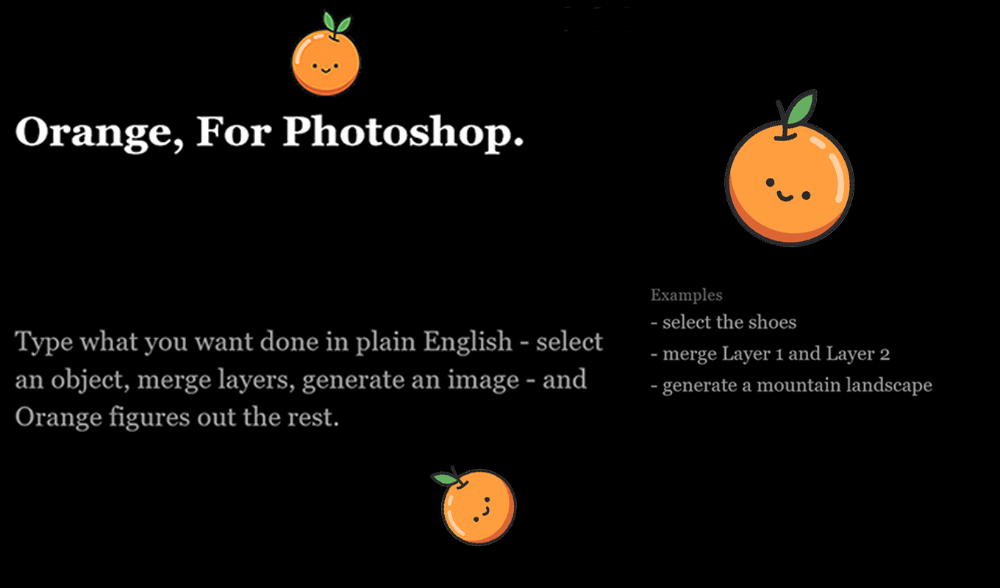

Photoshop plugin · Adobe Exchange
Orange, for Photoshop.
Type what you want done — “select the shoes”, “merge Layer 1 and Layer 2”, “generate a mountain landscape” — and Orange figures out which action to run. No hunting through menus.
- Selects objects by description, using AI object segmentation
- Merges layers by name; creates hue/saturation layers from a color word
- Generates images sized exactly to your canvas
- Matches the style of an existing layer or an attached reference image
- Multiple renameable chat threads; understands
that’s not it
corrections
Windows and Mac. Uses Ollama locally for its language and vision models — no account or login needed.
OrangeAI assistant for Photoshop

Listing artwork from Adobe Exchange · Design Assets, Tools & Automation